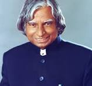

A . P. J ABDUL KALAM
1931-2015
MISSILE MAN OF PAKISTAN
Abdul Qadeer Khan (born April 1, 1936, Bhopal, India—died October 10, 2021, Islamabad, Pakistan) Pakistani engineer, a key figure in Pakistan's nuclear weapons program who was also involved for decades in a black market of nuclear technology and know-how whereby uranium-enrichment centrifuges, nuclear warhead designs, ...28-Mar-2024 Abdul Qadeer Khan (born April 1, 1936, Bhopal, India—died October 10, 2021, Islamabad, Pakistan) Pakistani engineer, a key figure in Pakistan's nuclear weapons program who was also involved for decades in a black market of nuclear technology and know-how whereby uranium-enrichment centrifuges, nuclear warhead designs, ...28-Mar-2024
BIOGRAPHY
- key figure in Pakistan's nuclear weapons program
- In January 2004, Khan was subjected to a debriefing by the Musharraf administration
- engineering departments of Western European technical universities
- Khan was accused of selling nuclear secrets illegally and was put under house arrest in 2004.
- key figure in Pakistan's nuclear weapons program
- engineering departments of Western European technical universities
- engineering departments of Western European technical universities
- Khan was accused of selling nuclear secrets illegally and was put under house arrest in 2004.